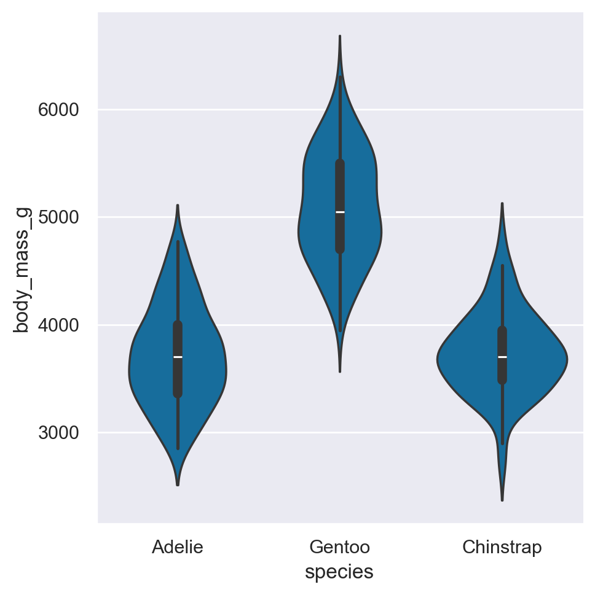
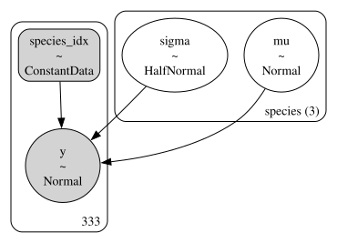
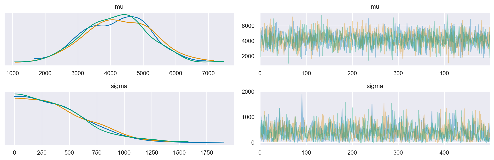
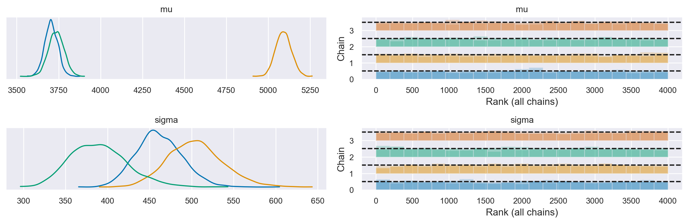

Gruppi multipli#
L’obiettivo del presente capitolo è di estendere la discussione iniziata nel capitolo bayes_one_mean_notebook, focalizzandoci sull’analisi comparativa delle medie di più gruppi indipendenti. Inizieremo importando le librerie necessarie.
Preparazione del notebook#
import pandas as pd
import numpy as np
from matplotlib import pyplot as plt
import seaborn as sns
import scipy.stats as stats
import pymc as pm
import pymc.sampling_jax
import xarray as xr
import arviz as az
import warnings
warnings.filterwarnings("ignore", category=FutureWarning)
%config InlineBackend.figure_format = 'retina'
RANDOM_SEED = 42
rng = np.random.default_rng(RANDOM_SEED)
az.style.use("arviz-darkgrid")
sns.set_theme(palette="colorblind")
Applicazioni#
In questo tutorial useremo i dati relativi ai pinguini Palmer, che verranno letti da un file csv, escludendo le osservazini che presentano valori mancanti:
penguins = pd.read_csv("../data/penguins.csv")
# Subset to the columns needed
missing_data = penguins.isnull()[
["bill_length_mm", "flipper_length_mm", "sex", "body_mass_g"]
].any(axis=1)
# Drop rows with any missing data
penguins = penguins.loc[~missing_data]
penguins.shape
(333, 8)
EDA#
Otteniamo in questo modo un DataFrame con 333 righe e 8 colonne.
penguins.head()
| species | island | bill_length_mm | bill_depth_mm | flipper_length_mm | body_mass_g | sex | year | |
|---|---|---|---|---|---|---|---|---|
| 0 | Adelie | Torgersen | 39.1 | 18.7 | 181.0 | 3750.0 | male | 2007 |
| 1 | Adelie | Torgersen | 39.5 | 17.4 | 186.0 | 3800.0 | female | 2007 |
| 2 | Adelie | Torgersen | 40.3 | 18.0 | 195.0 | 3250.0 | female | 2007 |
| 4 | Adelie | Torgersen | 36.7 | 19.3 | 193.0 | 3450.0 | female | 2007 |
| 5 | Adelie | Torgersen | 39.3 | 20.6 | 190.0 | 3650.0 | male | 2007 |
Nella discussione seguente ci focalizzeremo sul peso body_mass_g in funzione della specie:
summary_stats = (
penguins.loc[:, ["species", "body_mass_g"]]
.groupby("species")
.aggregate(["mean", "std", "count"])
)
summary_stats.round(1)
| body_mass_g | |||
|---|---|---|---|
| mean | std | count | |
| species | |||
| Adelie | 3706.2 | 458.6 | 146 |
| Chinstrap | 3733.1 | 384.3 | 68 |
| Gentoo | 5092.4 | 501.5 | 119 |
Creiamo un grafico a violino per questi dati.
sns.catplot(kind="violin", data=penguins, x="species", y="body_mass_g")
plt.show()
/Users/corrado/opt/anaconda3/envs/pymc_env/lib/python3.11/site-packages/seaborn/axisgrid.py:123: UserWarning: The figure layout has changed to tight
self._figure.tight_layout(*args, **kwargs)

Modellizzazione bayesiana#
La stima della media e della varianza ottenuta da un campione di osservazioni non è rappresentativa dell’intera popolazione di pinguini. Ci chiediamo, quindi, quale sia l’incertezza associata alla stima del peso per le tre specie di pinguini, considerando che abbiamo a disposizione solo un piccolo campione di osservazioni. Per fare ciò, dobbiamo definire un modello statistico che descriva la relazione tra i dati e i parametri. Nel nostro caso, descriviamo la distribuzione a posteriori dei parametri, tenendo conto dei dati, come segue:
dove la verosimiglianza sarà una densità Normale, dipendente da due parametri: \(\mu\) e \(\sigma\). Inoltre, sarà necessario definire le distribuzioni a priori di questi due parametri.
Consideriamo qui di seguito una possibile soluzione per quantificare l’incertezza della nostra stima mediante l’utilizzo dei metodi bayesiani.
Iniziamo a trovare la media e la deviazione standard di tutte le osservazioni.
[penguins["body_mass_g"].mean(), penguins["body_mass_g"].std()]
[4207.057057057057, 805.2158019428964]
coords = {"species": ["Adelie", "Gentoo", "Chinstrap"]}
with pm.Model(coords=coords) as model:
# Constant data for species indices
species_idx = pm.ConstantData(
"species_idx",
penguins["species"].replace({"Adelie": 0, "Gentoo": 1, "Chinstrap": 2}).values,
)
# Normal priors for mu and sigma for each species
mu = pm.Normal("mu", 4200, 1000, dims="species")
sigma = pm.HalfNormal("sigma", 500, dims="species")
# Likelihood
y = pm.Normal(
"y",
mu=mu[species_idx],
sigma=sigma[species_idx],
observed=penguins["body_mass_g"],
)
Questo modello stima i parametri \( \mu \) e \( \sigma \) (media e deviazione standard) per il peso corporeo (body_mass_g) di ciascuna delle tre specie di pinguini (“Adelie”, “Gentoo”, “Chinstrap”). A seguire, analizzeremo in dettaglio la struttura e la sintassi del modello.
Definizione delle Coordinate:
coords = {"species": ["Adelie", "Gentoo", "Chinstrap"]}
Qui vengono definite le coordinate per la dimensione “species”. Nel contesto dei modelli statistici bayesiani realizzati con PyMC, il termine “coordinate” è utilizzato per definire un insieme ordinato di valori che rappresentano le categorie o i livelli di una variabile. Nel caso presente, la variabile d’interesse è “species”, e ha tre livelli: “Adelie”, “Gentoo”, e “Chinstrap”.
Creazione del Modello:
with pm.Model(coords=coords) as model:
Viene creato un nuovo modello Bayesiano con le coordinate specificate.
Dati Costanti per Indici delle Specie:
species_idx = pm.ConstantData( "species_idx", penguins["species"].replace({"Adelie": 0, "Gentoo": 1, "Chinstrap": 2}).values, )
Gli indici per le specie vengono creati e salvati come dati costanti nel modello. Questi indici serviranno per mappare ciascuna osservazione ai parametri specifici della sua specie.
Gli indici contenuti nella variabile
species_idxservono per associare ogni osservazione del peso corporeo dei pinguini, rappresentato dapenguins["body_mass_g"], alla specie di pinguino corrispondente. Questa informazione viene utilizzata nel calcolo della verosimiglianza nel modello, specificata dalla funzionepm.Normal. In altre parole,species_idxindica a quale delle tre specie di pinguini (Adelie, Gentoo o Chinstrap) appartiene ciascuna delle 333 osservazioni del dataset.Per chiarire il ruolo di
species_idx, stampiamo questi valori creando un array ad hoc al di fuori dipm.Model.
species_idx_values = (
penguins["species"].replace({"Adelie": 0, "Gentoo": 1, "Chinstrap": 2}).values
)
print(species_idx_values)
[0 0 0 0 0 0 0 0 0 0 0 0 0 0 0 0 0 0 0 0 0 0 0 0 0 0 0 0 0 0 0 0 0 0 0 0 0
0 0 0 0 0 0 0 0 0 0 0 0 0 0 0 0 0 0 0 0 0 0 0 0 0 0 0 0 0 0 0 0 0 0 0 0 0
0 0 0 0 0 0 0 0 0 0 0 0 0 0 0 0 0 0 0 0 0 0 0 0 0 0 0 0 0 0 0 0 0 0 0 0 0
0 0 0 0 0 0 0 0 0 0 0 0 0 0 0 0 0 0 0 0 0 0 0 0 0 0 0 0 0 0 0 0 0 0 0 1 1
1 1 1 1 1 1 1 1 1 1 1 1 1 1 1 1 1 1 1 1 1 1 1 1 1 1 1 1 1 1 1 1 1 1 1 1 1
1 1 1 1 1 1 1 1 1 1 1 1 1 1 1 1 1 1 1 1 1 1 1 1 1 1 1 1 1 1 1 1 1 1 1 1 1
1 1 1 1 1 1 1 1 1 1 1 1 1 1 1 1 1 1 1 1 1 1 1 1 1 1 1 1 1 1 1 1 1 1 1 1 1
1 1 1 1 1 1 2 2 2 2 2 2 2 2 2 2 2 2 2 2 2 2 2 2 2 2 2 2 2 2 2 2 2 2 2 2 2
2 2 2 2 2 2 2 2 2 2 2 2 2 2 2 2 2 2 2 2 2 2 2 2 2 2 2 2 2 2 2 2 2 2 2 2 2]
Priori per \( \mu \) e \( \sigma \):
mu = pm.Normal("mu", 4200, 1000, dims="species") sigma = pm.HalfNormal("sigma", 500, dims="species")
In questa sezione del modello, si specificano i priori per i parametri \( \mu \) e \( \sigma \), associandoli a ciascuna delle tre specie di pinguini. Per \( \mu \), si utilizza una distribuzione Normale con una media di 4200 e una deviazione standard di 1000. Per \( \sigma \), si utilizza una distribuzione HalfNormal con un parametro di scala di 500.
L’uso dell’argomento
dims="species"indica che si intendono ottenere stime separate di \( \mu \) e \( \sigma \) per ogni specie (Adelie, Gentoo e Chinstrap). In pratica, questo significa che il modello genererà un array di valori per \( \mu \) e \( \sigma \), uno per ogni specie.L’argomento
coords, precedentemente definito comecoords = {"species": ["Adelie", "Gentoo", "Chinstrap"]}, fornisce un ulteriore contesto alla dimensione specificata dadims, delineando i tre livelli o categorie specifiche della dimensione “species”. Questo dettaglio facilita non solo la modellazione, ma anche l’interpretazione e la visualizzazione dei risultati ottenuti.Verosimiglianza (Likelihood):
y = pm.Normal( "y", mu=mu[species_idx], sigma=sigma[species_idx], observed=penguins["body_mass_g"], )
La verosimiglianza del modello è definita come una distribuzione Normale. Ogni osservazione del peso corporeo è mappata al \( \mu \) e \( \sigma \) corrispondenti alla sua specie, utilizzando gli indici delle specie (
species_idx).
Generiamo la visualizzazione grafica della struttura del modello.
pm.model_to_graphviz(model)

Esaminiamo la distribuzione predittiva a priori.
with model:
idata_prior = pm.sample_prior_predictive(random_seed=RANDOM_SEED)
Sampling: [mu, sigma, y]
az.plot_trace(idata_prior.prior)
plt.tight_layout()
plt.show()
/var/folders/cl/wwjrsxdd5tz7y9jr82nd5hrw0000gn/T/ipykernel_64695/2431238427.py:2: UserWarning: The figure layout has changed to tight
plt.tight_layout()

Eseguiamo il campionamento.
with model:
idata = pm.sampling_jax.sample_numpyro_nuts(idata_kwargs={"log_likelihood": True})
Show code cell output
Compiling...
Compilation time = 0:00:01.602953
Sampling...
Sampling time = 0:00:03.337651
Transforming variables...
Transformation time = 0:00:00.098902
Computing Log Likelihood...
Log Likelihood time = 0:00:00.221527
Esaminiamo le distribuzioni a posteriori e le diagnostiche del campionamento.
axes = az.plot_trace(idata, combined=True, kind="rank_bars")
plt.tight_layout()
plt.show()
/var/folders/cl/wwjrsxdd5tz7y9jr82nd5hrw0000gn/T/ipykernel_64695/2491313140.py:2: UserWarning: The figure layout has changed to tight
plt.tight_layout()

Abbiamo ottenuto tre distribuzioni a posteriori per ciascuno dei due parametri \(\mu\) e \(\sigma\), una distribuzione per ciascuna specie di pinguini.
Un sommario numerico delle distribuzioni a posteriori si ottiene nel modo seguente.
az.summary(idata)
| mean | sd | hdi_3% | hdi_97% | mcse_mean | mcse_sd | ess_bulk | ess_tail | r_hat | |
|---|---|---|---|---|---|---|---|---|---|
| mu[Adelie] | 3706.056 | 39.372 | 3634.606 | 3781.547 | 0.512 | 0.362 | 5945.0 | 3039.0 | 1.0 |
| mu[Gentoo] | 5090.451 | 45.991 | 5005.651 | 5177.053 | 0.622 | 0.440 | 5468.0 | 3062.0 | 1.0 |
| mu[Chinstrap] | 3735.168 | 46.451 | 3647.270 | 3819.095 | 0.617 | 0.436 | 5673.0 | 2973.0 | 1.0 |
| sigma[Adelie] | 461.422 | 27.157 | 413.131 | 514.079 | 0.369 | 0.264 | 5527.0 | 2945.0 | 1.0 |
| sigma[Gentoo] | 504.719 | 33.030 | 445.111 | 569.444 | 0.451 | 0.321 | 5455.0 | 3054.0 | 1.0 |
| sigma[Chinstrap] | 389.728 | 33.935 | 327.941 | 452.916 | 0.471 | 0.342 | 5526.0 | 2972.0 | 1.0 |
Confrontiamo la media a posteriori del parametro \(\mu\) con le medie del peso dei tre campioni di pinguini.
summary_stats = (
penguins.loc[:, ["species", "body_mass_g"]]
.groupby("species")
.aggregate(["mean", "std", "count"])
)
summary_stats.round(1)
| body_mass_g | |||
|---|---|---|---|
| mean | std | count | |
| species | |||
| Adelie | 3706.2 | 458.6 | 146 |
| Chinstrap | 3733.1 | 384.3 | 68 |
| Gentoo | 5092.4 | 501.5 | 119 |
Nell’analisi bayesiana, le medie a posteriori dei parametri \( \mu \) per ciascuna delle tre specie di pinguini convergono verso le medie campionarie. L’elemento distintivo dell’approccio bayesiano è la quantificazione dell’incertezza associata a queste stime, che qui è espressa attraverso gli intervalli di credibilità al 94%.
Dall’osservazione delle distribuzioni a posteriori e dei corrispondenti intervalli di credibilità, possiamo inferire i seguenti punti:
Similarità tra Adelie e Chinstrap: Le distribuzioni a posteriori delle medie dei pesi per le specie Adelie e Chinstrap sono largamente sovrapposte. Questo suggerisce che le differenze nel peso medio tra queste due specie non sono statisticamente credibili.
Distinzione dei Gentoo: Al contrario, la distribuzione a posteriori del peso medio per la specie Gentoo è notevolmente disgiunta da quelle delle altre due specie, indicando che i pinguini Gentoo sono generalmente più pesanti.
Variabilità del Peso: L’analisi delle distribuzioni a posteriori dei parametri \( \sigma \) rivela che il peso dei pinguini Gentoo presenta una maggiore variabilità, seguito dai pinguini Adelie e infine dai pinguini Chinstrap. Questo è corroborato dall’ampiezza degli intervalli di credibilità per \( \sigma \) nelle tre specie.
In sintesi, l’analisi Bayesiana fornisce non solo una stima puntuale dei parametri di interesse, ma anche una misura robusta dell’incertezza associata a queste stime, permettendo un’interpretazione più completa e informativa dei dati.
Test d’ipotesi bayesiani#
Dopo aver effettuato il campionamento dalla distribuzione a posteriori del parametro \( \mu \) per ogni specie di pinguino, è naturale indagare sulla probabilità che il peso medio di una specie sia maggiore rispetto a un’altra. Questa domanda può essere affrontata mediante l’analisi comparativa delle distribuzioni a posteriori. In particolare, si può procedere estraendo campioni casuali dai posteriori e confrontando le corrispondenti realizzazioni del parametro \( \mu \) tra le diverse specie.
L’ispezione delle proprietà di idata fornisce informazioni dettagliate sui campioni a posteriori, che possono essere utilizzate per ulteriori analisi e interpretazioni statistiche.
idata
-
<xarray.Dataset> Dimensions: (chain: 4, draw: 1000, species: 3) Coordinates: * chain (chain) int64 0 1 2 3 * draw (draw) int64 0 1 2 3 4 5 6 7 8 ... 992 993 994 995 996 997 998 999 * species (species) <U9 'Adelie' 'Gentoo' 'Chinstrap' Data variables: mu (chain, draw, species) float64 3.731e+03 5.162e+03 ... 3.691e+03 sigma (chain, draw, species) float64 425.7 446.8 349.3 ... 503.2 418.3 Attributes: created_at: 2024-02-06T12:22:40.772882 arviz_version: 0.17.0 -
<xarray.Dataset> Dimensions: (chain: 4, draw: 1000, y_dim_0: 333) Coordinates: * chain (chain) int64 0 1 2 3 * draw (draw) int64 0 1 2 3 4 5 6 7 8 ... 992 993 994 995 996 997 998 999 * y_dim_0 (y_dim_0) int64 0 1 2 3 4 5 6 7 ... 325 326 327 328 329 330 331 332 Data variables: y (chain, draw, y_dim_0) float64 -6.974 -6.986 ... -7.434 -6.975 Attributes: created_at: 2024-02-06T12:22:40.779153 arviz_version: 0.17.0 -
<xarray.Dataset> Dimensions: (chain: 4, draw: 1000) Coordinates: * chain (chain) int64 0 1 2 3 * draw (draw) int64 0 1 2 3 4 5 6 ... 993 994 995 996 997 998 999 Data variables: acceptance_rate (chain, draw) float64 0.7452 0.9448 0.8872 ... 1.0 0.9284 step_size (chain, draw) float64 0.7037 0.7037 ... 0.7413 0.7413 diverging (chain, draw) bool False False False ... False False False energy (chain, draw) float64 2.544e+03 2.543e+03 ... 2.54e+03 n_steps (chain, draw) int64 3 3 7 7 3 7 3 7 7 ... 3 7 7 3 7 3 3 3 7 tree_depth (chain, draw) int64 2 2 3 3 2 3 2 3 3 ... 2 3 3 2 3 2 2 2 3 lp (chain, draw) float64 2.541e+03 2.539e+03 ... 2.538e+03 Attributes: created_at: 2024-02-06T12:22:40.777055 arviz_version: 0.17.0 -
<xarray.Dataset> Dimensions: (y_dim_0: 333) Coordinates: * y_dim_0 (y_dim_0) int64 0 1 2 3 4 5 6 7 ... 325 326 327 328 329 330 331 332 Data variables: y (y_dim_0) float64 3.75e+03 3.8e+03 3.25e+03 ... 4.1e+03 3.775e+03 Attributes: created_at: 2024-02-06T12:22:40.779700 arviz_version: 0.17.0 inference_library: numpyro inference_library_version: 0.13.2 sampling_time: 3.337651 -
<xarray.Dataset> Dimensions: (species_idx_dim_0: 333) Coordinates: * species_idx_dim_0 (species_idx_dim_0) int64 0 1 2 3 4 ... 329 330 331 332 Data variables: species_idx (species_idx_dim_0) int32 0 0 0 0 0 0 0 ... 2 2 2 2 2 2 2 Attributes: created_at: 2024-02-06T12:22:40.780065 arviz_version: 0.17.0 inference_library: numpyro inference_library_version: 0.13.2 sampling_time: 3.337651
Recuperiamo i valori a posteriori del parametro \(\mu\).
mu_post = idata.posterior['mu']
L’oggetto ottenuto è un array di dimensioni \(4 \times 1000 \times 3\). L’indice 4 si riferisce alle catente, l’indice 1000 si riferisce al numero di campioni ottenuti, l’indice 3 si riferisce ai gruppi.
mu_post.shape
(4, 1000, 3)
Per trovare la media a posteriori del parametro \(\mu\) della specie Adelie prendiamo le osservazioni che si riferiscono a tutte le catene (:), a tutti i valori campionati (:) per il primo gruppo (0). La media a posteriori dei pinguini Adelie è dunque uguale a
print(mu_post[:, :, 0].mean())
<xarray.DataArray 'mu' ()>
array(3706.05560468)
Coordinates:
species <U9 'Adelie'
Per tutte e tre le specie (Adelie, Gentoo, Chinstrap) abbiamo
np.array(
[mu_post[:, :, 0].mean(), mu_post[:, :, 1].mean(), mu_post[:, :, 2].mean()]
).round(1)
array([3706.1, 5090.5, 3735.2])
Confrontiamo questi risultati con le statistiche descrittive del campione.
summary_stats = (
penguins.loc[:, ["species", "body_mass_g"]]
.groupby("species")
.aggregate(["mean"])
)
summary_stats.round(1)
| body_mass_g | |
|---|---|
| mean | |
| species | |
| Adelie | 3706.2 |
| Chinstrap | 3733.1 |
| Gentoo | 5092.4 |
Per verificare che l’ordinamento dei gruppi corrisponda a Adelie, Gentoo, Chinstrap, esaminiamo la stima a posteriori della deviazione standard delle tre specie.
sigma_post = idata.posterior["sigma"]
np.array(
[sigma_post[:, :, 0].mean(), sigma_post[:, :, 1].mean(), sigma_post[:, :, 2].mean()]
).round(1)
array([461.4, 504.7, 389.7])
I valori trovati confermano quello che ci aspettavamo. Ora che abbiamo capito come estrarre le stime a posteriori di un parametro per ciascun gruppo, possiamo passare al test di ipotesi bayesiano. Chiediamoci quale sia la probabilità che un pinguino Adelie abbia un peso minore di un pinguino Chinstrap.
np.mean([mu_post[:, :, 0] < mu_post[:, :, 1]])
1.0
Chiediamoci quale sia la probabilità che un pinguino Adelie abbia un peso minore di un pinguino Gentoo.
np.mean([mu_post[:, :, 0] < mu_post[:, :, 2]])
0.68875
Chiediamoci quale sia la probabilità che un pinguino Chinstrap abbia un peso minore di un pinguino Gentoo.
np.mean([mu_post[:, :, 1] < mu_post[:, :, 2]])
0.0
Consideriamo ora la variabilità. Troviamo la probabilità che la deviazione standard del peso dei pinguini Adelie sia minore di quella dei pinguini Chinstrap.
np.mean([sigma_post[:, :, 0] < sigma_post[:, :, 2]])
0.0525
Commenti e considerazioni finali#
In questo capitolo, abbiamo esaminato l’inferenza parametrica applicata a distribuzioni normali in scenari con gruppi di dati indipendenti. Nei capitoli successivi, ci sposteremo verso un quadro analitico diverso, particolarmente pertinente quando si presume che i gruppi in esame siano istanze specifiche di una categoria generale e sottostante. Questa prospettiva è formalizzata attraverso l’uso di modelli gerarchici bayesiani, una metodologia frequentemente impiegata nel campo della psicologia.
%load_ext watermark
%watermark -n -u -v -iv -w -m
Last updated: Tue Feb 06 2024
Python implementation: CPython
Python version : 3.11.7
IPython version : 8.19.0
Compiler : Clang 16.0.6
OS : Darwin
Release : 23.3.0
Machine : x86_64
Processor : i386
CPU cores : 8
Architecture: 64bit
arviz : 0.17.0
numpy : 1.26.2
xarray : 2023.12.0
matplotlib: 3.8.2
seaborn : 0.13.0
scipy : 1.11.4
pymc : 5.10.3
pandas : 2.1.4
Watermark: 2.4.3